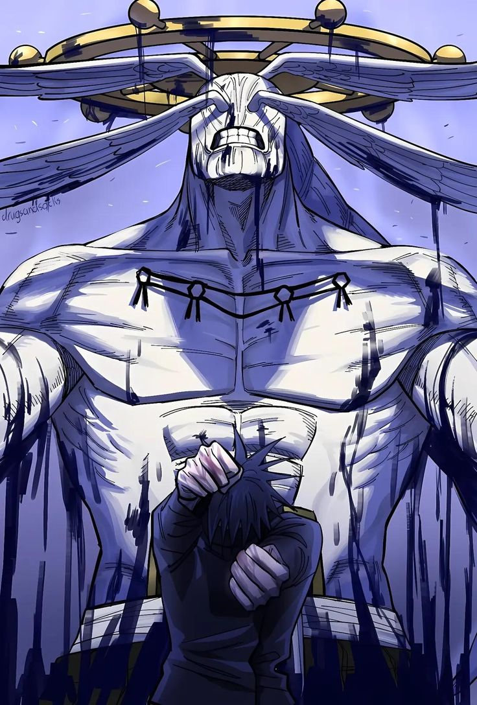

Historia
Megumi Fushiguro nació el 22 de diciembre de 2002, es el hijo de Toji Fushiguro y descendiente del clan Zenin es un personaje ficticio de la franquicia de anime y manga Jujutsu Kaisen, creado por Gege Akutami. Siendo el deuteragonista de la serie, es un joven hechicero que estudia en la escuela de magia de Tokio. Al heredar la técnica maldita del Clan Zenin, se convirtió en el objetivo principal de la familia, tratándolo de comprar por una gran suma de dinero. Sin embargo, dejó en claro que ya no tenía ninguna conexión con ellos. No obstante, se convirtió en el líder del clan tiempo después tras el fallecimiento de su predecesor. A pesar de que su personalidad es estoica y calculadora, Megumi desea ayudar a proteger a las personas que considera buenas o amables. Su deseo lo motivó a salvar a Yūji Itadori (protagonista) de su ejecución luego de convertirse en el recipiente de una maldición peligrosa. Megumi es generalmente un joven bastante tranquilo, serio y reservado, como comentan Nobara y Yūji cuando este último se queja de que Megumi nunca les cuenta sobre él mismo. Aunque no muestra mucho interés por lo que suelen hacer sus compañeros, siempre está en compañía de ellos y suele acompañarlos a diferentes lugares, no pareciendo rechazar la idea de pasar tiempo con ellos. Aunque aparentemente es estoico y frío, Megumi desea ayudar a proteger a las personas que considera buenas o amables. Él cree que el mundo es injusto y que un exorcista es una herramienta para asegurarse de que las personas buenas tengan una mejor oportunidad de vivir

Más info de Megumi aquí: Megumi Fushiguro
Información
Estas son algunas habilidades de Megumi Fushiguro
- Técnica de las Diez Sombras
- Invocación de shikigamis poderosos
- Expansión de Dominio (Jardín de Sombras Quimera)
- inteligencia táctica
- Combate cuerpo a cuerpo
Top 3 momentos épicos de Megumi
- Invocación a Mahoraga: En el enfrentamiento contra Haruta Shigemo en el arco de Shibuya, Megumi decide arriesgar su vida e invoca a Mahoraga, el shikigami más poderoso y peligroso de la Técnica de las Diez Sombras
- Megumi le gana a Noritoshi Kamo: Durante el Evento de Intercambio, pelea contra Noritoshi Kamo, usuario de la Manipulación de Sangre. Aunque Kamo tenía ataques poderosos, Megumi usó estrategia, el entorno y sus shikigamis para superarlo.
- Megumi vence a Reggie Star: En el Juego de Exterminio, Megumi se enfrenta a Reggie Star, que podía materializar objetos usando contratos. Fue una pelea súper estratégica y brutal. Megumi usa su Expansión de Dominio incompleta
Ficha Técnica
| Edad | 15 años |
|---|---|
| Peso | 63 kg |
| Estatura | 175 cm |
| Primera aparición | Manga Jujutsu Kaisen (2018) |
| Debilidades | Exceso de energía maldita, uso riesgoso de Mahoraga |
| Alias | Megumi |
Registro de Fans
Galeria de Megu